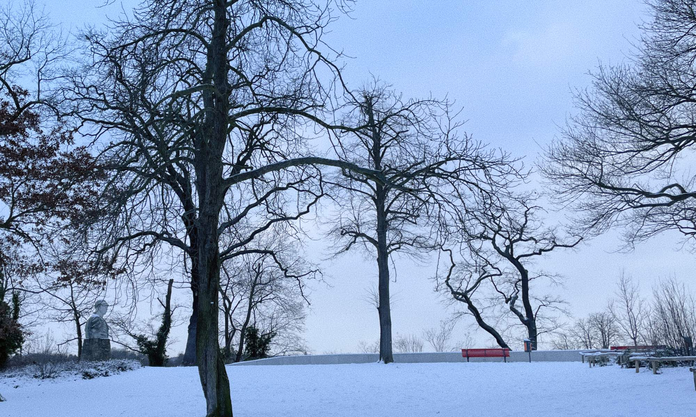

Wannsee blackout
Since yesterday, several lines have not been operating due to someone’s “vandalism” in Berlin. I found there was a power outage at Wannsee station, and it was completely dark inside the station.
I took the RE1 to Wannsee and then used a bus to get to work.
Here is a beautiful snowy view of the bus stop at Wannsee station. This was the only thing that made me feel good in the situation.
